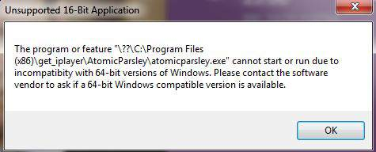

Ever since I upgraded to 2.94 after every download a series of error messages come up saying the version of atomicparsley.exe is incompatible with 64 bit windows 7. Anyone else had this problem and had any luck fixing it?
I seem to have got rid of the error messages by deleting the atomicparsley.exe from the program files. PVR still seems to work, what was atomicparsley for?
It was a real pain because you couldn't leave the PVR running to quietly capture stuff on the list as it became available, because the error messages had to be cleared before the next download would start.
Unless anyone tells me I have done something disastrous removing atomicparsley I will consider my problem solved.
Who are "those" saying it's only you having this problem? You only received one response here, and that said no such thing. It's not just you, but it's not many more. I told you at GitHub this was a problem only reported to occur with get_iplayer on your system and one other. The OP of the thread you referenced couldn't even be bothered to provide the error message he received, so you only have his assumption that it was a problem running on 64-bit Windows. That isn't really a case of "google would have told you", now is it?. So we have two (maybe three) reports to date out of thousands of get_iplayer Windows users. If you can figure out what is wrong on those two (maybe three) systems, I'd be glad to know about it. The OP of the thread you referenced also claimed "There are a bunch of workarounds", but singularly failed to provide any. I have to assume if there were any hints to an explanation to be found on the internet, you would have found them.
It appears you no longer use AtomicParsley. If you choose to try it again in the future, current and older builds can be found here:
https://bitbucket.org/jonhedgerows/atomi.../downloads
Re-install AP with the get_iplayer installer. Then extract the AtomicParsley.exe file from the .zip file you downloaded and replace the one in
Code:
C:\Program Files (x86)\get_iplayer\AtomicParsley\AtomicParsley
You will need administrator privileges. Older builds may contain bugs that were fixed in 0.96, but AP hasn't changed too much in recent versions. You may find other AP builds on the internet, but I suspect many of them will be ancient 0.90 builds. You can try them, but it's not recommended.
Quote:Ever since I upgraded to 2.94 after every download a series of error messages come up saying the version of atomicparsley.exe is incompatible with 64 bit windows 7. Anyone else had this problem and had any luck fixing it?
Me too. Just had to reinstall Win 7 Home Premium 64 bit... Installed get_iplayer using the Windows installer and ran a download of a radio programme. Download is fine, but got some atomicparsley error windows I never have had before.
Hope I attached the clipping of the message at the end of the download...
Quote:pid='2507' dateline='1437182782'] (15-06-2015, 01:08 PM)Ever since I upgraded to 2.94 after every download a series of error messages come up saying the version of atomicparsley.exe is incompatible with 64 bit windows 7. Anyone else had this problem and had any luck fixing it?
Me too. Just had to reinstall Win 7 Home Premium 64 bit... Installed get_iplayer using the Windows installer and ran a download of a radio programme. Download is fine, but got some atomicparsley error windows I never have had before.
Hope I attached the clipping of the message at the end of the download...
Further to this I copied the Error window (appearing 4 times)

Did AtomicParsley work before you re-installed Windows?
(18-07-2015, 12:15 PM)Did AtomicParsley work before you re-installed Windows?
I assume so as I never had an error message from get_iplayer other than the occasional RMTP stopped working message. Certainly never anything mentioning AP.
Since AP was working before your re-install, it would seem that something you did as part of that re-install is causing the problem. AP is obviously not a 16-bit application, and it is has no dependencies except Windows system libraries. If there were a general problem running AP on 64-bit Windows, then nobody anywhere could use it, which clearly is not the case. AP is basically run inside a DOS shell, which may in turn load some 16-bit component and generate the error. Possible culprits include obsolete games, educational software, or drivers. For example, one user had this problem with rtmpdump because an old network driver was being loaded from C:\Windows\System32\autoexec.nt (check your autoexec.nt just in case). You can also try a clean boot (google for instructions) to see if a service or an application launched at startup is interfering. If you can't find the offending component, you can just do as the OP did and uninstall AP.
Ah. Sorry to have been a nuisance. Went to the AP folder in get_iplayer... There was no AP application, only a shortcut. I assume it was a shortcut (less than 1k in size). Downloaded and copied AP into the folder and hey presto! it works.
Thanks for trying.
Good to know. Thanks for reporting back.
{kind=link}
{kind=link}